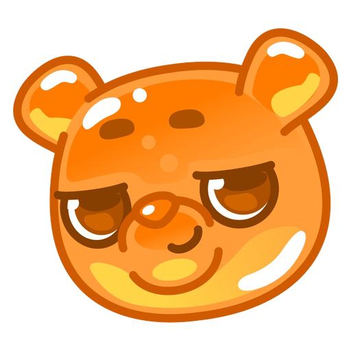

Online • 99.9% Uptime

My English Buddy v2.0
English Tutor Bot
Platform bot belajar bahasa Inggris interaktif menggunakan offline content bank & gemini API
Dual Engine Status
2 Mesin
1 dari 2 Mode Aktif
Content Bank Offline
Bank Kurasi 108 Materi Ramah Anak
Status Operasi:
Siap Melayani
Kapasitas:
108 Soal (6 Kategori)
Kecepatan Respon:
< 1 ms (Instan)
Kebutuhan API:
Zero API Key / 100% Gratis
Gemini Flash AI Online AI
Generator & Koreksi Otomatis
Status Operasi:
Menunggu API Key
Kondisi .env:
GEMINI_API_KEY kosong
Kecepatan Respon:
-- ms (Standby)
Aktivasi:
Isi API key di .env
Kesimpulan: Saat ini HANYA 1 Mode yang Aktif (Content Bank)
Bot Telegram beroperasi normal menggunakan Mode Content Bank (Offline Engine). Siswa dapat langsung
belajar 6 kategori materi tanpa gangguan. Jika Anda menambahkan GEMINI_API_KEY pada file
.env, sistem otomatis beralih ke Hybrid Mode (AI sebagai generator dinamis dan Content
Bank sebagai fallback anti-gagal).